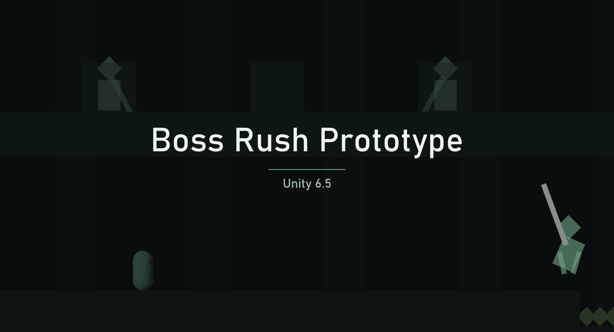

- A boss-rush prototype: pick a fight, survive its phases, move on to the next. Three fights implemented, each with several attacks and phase transitions.
- Attacks, phases, arenas and tuning are all ScriptableObjects. A balance change is an inspector edit, not a recompile, so a designer could make one without me.
- Each attack is an asset exposing a single coroutine, so the same attack drops into any phase of any fight and editing it changes it everywhere it is used.
- Tuning is applied, not baked. Attacks never read their raw serialised numbers; damage, telegraph and projectile speed all pass through the boss's tuning scale first.
- What stayed in code is what had to: the motion of an attack, the geometry of a beam sweep clipped to the arena bounds.
- Built the editor tools that scaffold a new fight and validate it, so a broken reference is caught at author time rather than failing silently at runtime.